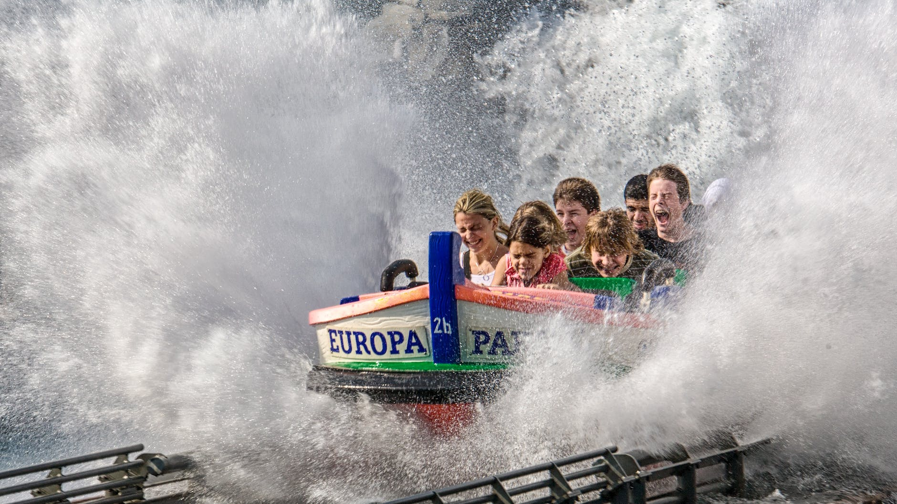

Europa-ParkMackMediaRulanticaEatrenalinYULLBE GOSAT.1Warner Bros.DJ BoBoVoltron Nevera
Works
Selektierte Arbeiten, die öffentlich gezeigt werden dürfen.
- Film
- Commercial
- Entertainment
- Fotografie
Dies ist bewusst nur eine kuratierte Auswahl. Viele weitere Produktionen, Kampagnen und interne Arbeiten können aus NDA-, Rechte- oder Freigabegründen nicht öffentlich gezeigt werden. Im persönlichen Gespräch lassen sich passende Referenzen, Rollen und Ergebnisse gezielter einordnen.
Public selection
More work under NDA
 View Project
View Project
DJ Bobo EVOLUT30N Tour
2024 · Tourtrailer · Producer · VFX · KI Postproduktion
 View Project
View Project
Duolingo Spec Ad
Spec Ad · Commercial · Story · Postproduktion

View ProjectEuropa-Park Neuheiten
Entertainment · Freizeitpark · Campaign Content
 View Project
View Project
Virtual Production Case Study
Lab · 3D · Unreal-nahe Workflows · Lookentwicklung
 View Project
View Project
Mareike & Daniel Wedding
Fotografie · Reportage · Portrait · Cinematic Stillness
 View Project
View Project
Rockstar Musicvideo
Musicvideo · Performance · Schnitt · Lookentwicklung
Marken, Branchen und Organisationen.
Andreas Boehler hat bereits für zahlreiche Marken aus Entertainment, Healthcare, Industrie, Food, Hospitality, Interior, Beauty, Consumer, Business und Digital gearbeitet - sichtbar ist hier nur der Teil, der öffentlich gezeigt werden darf.
RocheNovartisPfizerAstraZenecaMSDAbbVieAcinoUniklinikum FreiburgBasileaActelionBoehringer IngelheimGalderma SpirigOctapharmaMovicol
AmmoliteFol EpiChavrouxTartareCaprice des DieuxSaint AlbrayCoopWaldhausPiù Caffè ProfessionalSchwarzwaldmilchBongrain / Savencia
BeiersdorfNiveaWeledaPulpo
AdobeBMWDufryLexwareMesse Basel (MCH)MOVIN